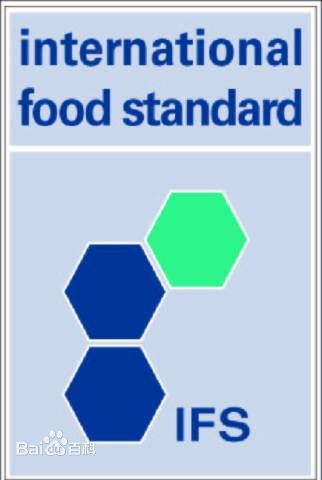

食品安全 / IFS
IFS 国际食品标准
IFS国际食品标准（International Food Standard），是由HDE－德国零售商联盟和FCD－法国零售商和批发商联盟共同制订的食品供应商质量体系审核标准。这套标准包含了对食品供应商的品质与

安全卫生保证能力的考核要求，得到了欧洲尤其是德国和法国食品零售商的广泛认可。目前IFS已更新到第五版，并获得了意大利零售联盟的认可。
IFS标准主要包括哪些方面
1．质量管理体系（QMS）
2.管理责任感
3.资源管理
4．产品放行
5.测量、分析及提高